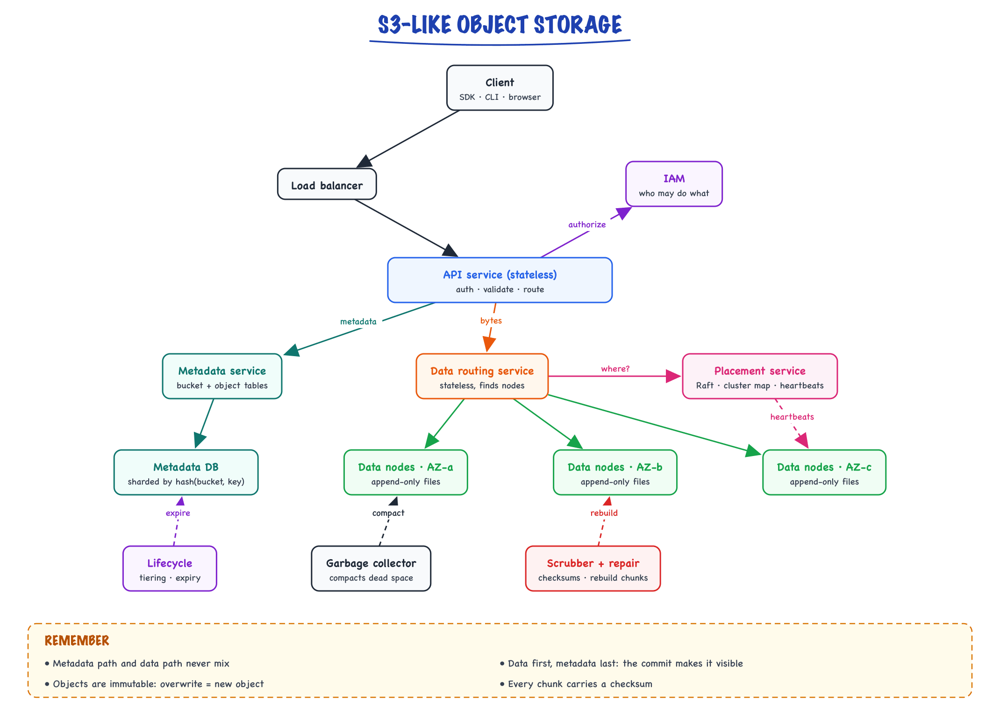
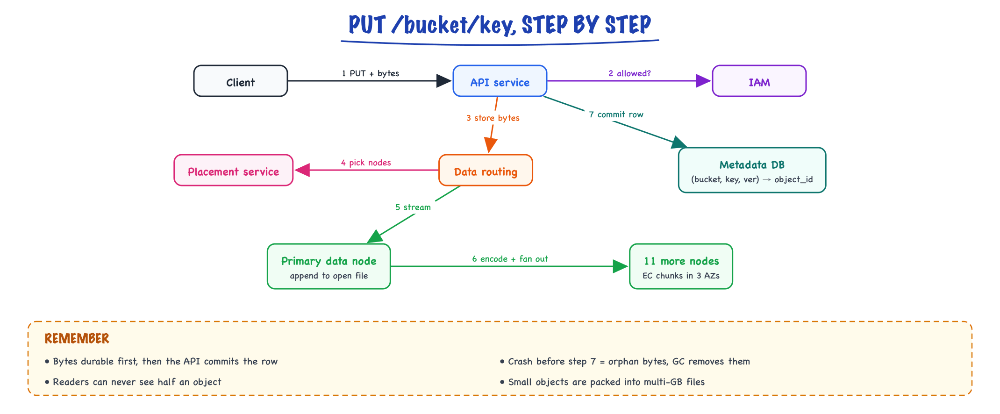
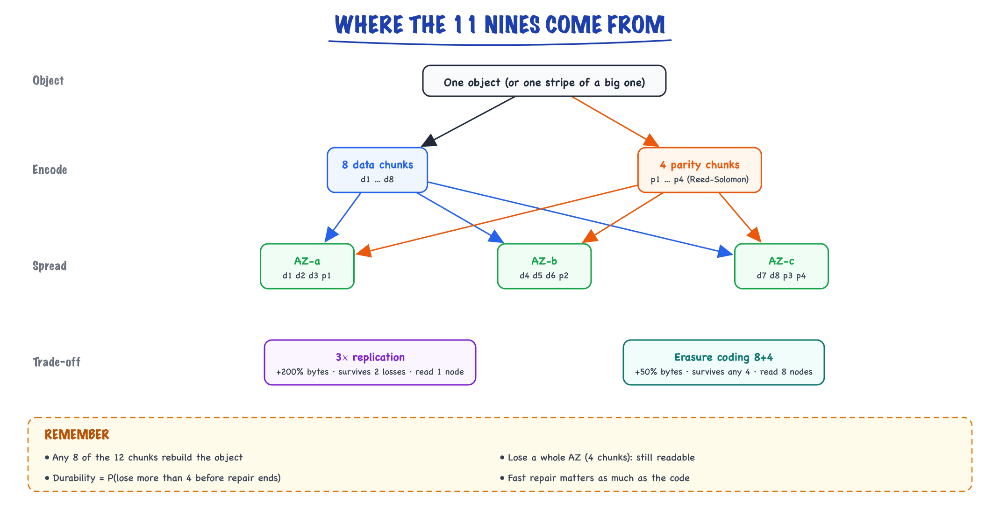

S3-like Object Storage // HLD
Store trillions of immutable blobs behind a flat bucket/key namespace with 11 nines of durability. The design splits a sharded metadata service (which key points to which bytes) from a data store of append-only files on thousands of disks, erasure-coded across availability zones. Covers Alex Xu Vol 2, chapter 9.

Whiteboard HLD. A stateless API service authorizes with IAM, then sends bytes down the data path (routing → placement → data nodes in 3 AZs) and metadata down a separate path to a sharded metadata DB. Background jobs compact dead space, scrub and rebuild chunks, and apply lifecycle rules.
01 — Requirements
Functional
- Buckets — create, delete (only when empty), list; names are globally unique
- Objects — PUT, GET (whole or byte range), DELETE, HEAD; objects are immutable, an overwrite replaces the whole object
- List objects in a bucket by prefix, paginated, sorted by key
- Large uploads — multipart upload for objects up to 5 TB
- Versioning per bucket, with delete markers
- Access control — per-bucket and per-object policies; presigned URLs for temporary access
- Lifecycle — expire or move objects to colder storage classes by age
Non-Functional
- Durability 99.999999999% (11 nines): lose about 1 object in 10 million every 10,000 years
- Availability 99.99% for reads and writes in the standard class
- Strong read-after-write for PUT, DELETE and LIST (S3 has offered this since December 2020)
- Scale — exabytes of data, trillions of objects, bytes to 5 TB per object
- Cost — storage overhead well under 3×; cheap cold tiers
- Throughput over latency — tens of ms for first byte is fine; aggregate bandwidth matters
01a — Core Entities
| Entity | Key Fields | Notes |
|---|---|---|
| Bucket | bucket_name, bucket_id, owner_id, region, versioning_enabled, policy | Globally unique name; few per user, so one small table. |
| Object | bucket_name, object_key, version_id, object_id, size, etag, content_type, created_at | The metadata row. Maps a user-facing name to internal bytes. Up to ~2 KB each. |
| Object data | object_id (UUID), checksum, placement (which nodes / chunks) | The bytes. Never updated in place. |
| Data file | file_id, node_id, state (open / sealed), size | Multi-GB append-only file on a data node that packs many small objects. |
| Object location | object_id → file_id, offset, length, checksum | Local index on each data node (RocksDB / SQLite). |
| Multipart upload | upload_id, bucket, key, parts[part_no → etag, object_id], state | Lives until complete or abort. |
| Delete marker | bucket, key, version_id, is_delete_marker | A DELETE on a versioned bucket inserts one instead of removing data. |
| Cluster map | region → AZ → rack → node → disk, health, capacity | Owned by the placement service; used to pick failure-independent nodes. |
01b — API Design
Object hot path
PUT /{bucket}/{key} body = bytes, Content-MD5, x-amz-meta-*
-> 200 ETag: "<md5>" x-amz-version-id: <id>
GET /{bucket}/{key} Range: bytes=0-1048575 ?versionId=
-> 200 / 206 bytes
HEAD /{bucket}/{key} -> size, ETag, metadata, no body
DELETE /{bucket}/{key} -> 204 (delete marker if versioned)
GET /{bucket}?list-type=2&prefix=photos/2026/&delimiter=/&max-keys=1000&continuation-token=...
Multipart upload
POST /{bucket}/{key}?uploads -> { UploadId }
PUT /{bucket}/{key}?partNumber=7&uploadId=... -> ETag of part 7
POST /{bucket}/{key}?uploadId=... body: [{PartNumber, ETag}, ...] -> final ETag
DELETE /{bucket}/{key}?uploadId=... -> abort, parts freed
Buckets
PUT /{bucket} create
DELETE /{bucket} only if empty
GET / list my buckets
The non-obvious contract: PUT is idempotent by key (last writer wins), the ETag is the MD5 of the bytes for single-part uploads but MD5-of-part-MD5s + "-N" for multipart, and LIST is paginated by an opaque continuation token, not an offset.
02 — Estimation
Raw capacity: 100 PB, 40% used -> 40 PB of user data Object sizes: 20% < 1 MB (~0.5 MB), 60% 1-64 MB (~32 MB), 20% > 64 MB (~200 MB) Average object: 0.2*0.5 + 0.6*32 + 0.2*200 ~= 59 MB Object count: 40 PB / 59 MB ~= 0.68 billion objects Metadata: ~1 KB per object ~= 0.7 TB -> a modest sharded DB Physical bytes: EC 8+4 = 1.5x -> 60 PB on disk (3x replication: 120 PB) Disks: 60 PB / 20 TB per HDD ~= 3,000 disks, ~125 servers of 24 disks Disk failures: ~1% annual failure rate -> ~30 dead disks a year: repair is always running Traffic (assumed): 1,000 PUT/s, 5,000 GET/s at peak Ingress: 1,000 * 59 MB ~= 60 GB/s Egress: 5,000 * 59 MB ~= 300 GB/s -> ~2.4 GB/s per server (25 GbE NICs) Metadata QPS: ~6,000/s + LIST -> trivially shardable
The numbers say: metadata is small and hot, data is huge and cold. That is why they live in two separate systems with different storage engines.
03 — Why It's Hard
With thousands of disks, something is always broken, yet no byte may be lost: 11 nines needs redundancy spread across failure domains plus repair faster than the next failure. Full copies cost 3× the bytes, so you need erasure coding without hurting reads. Billions of objects range from 1 KB to 5 TB. Filesystems choke on billions of tiny files, so small objects have to be packed. Clients expect strong read-after-write on a namespace sharded across many machines, while uploads can crash halfway. Deletes cannot reclaim space in place in immutable, packed files, so you need garbage collection and compaction. LIST by prefix has to work on a hash-sharded table.
04 — Architecture
Client --> LB --> API service (stateless) --> IAM (authN / authZ, cached)
|
+--------------+----------------------+
| metadata | bytes
v v
Metadata service Data routing service --> Placement service
(bucket + object tables) (stateless) (Raft, cluster map,
| | heartbeats)
v v
Metadata DB Data nodes in AZ-a / AZ-b / AZ-c
sharded by hash(bucket, key) append-only files + local object index
Background: garbage collector / compactor, scrubber + repair, lifecycle (tiering, expiry)API service
Stateless. Authenticates (SigV4), authorizes via IAM, validates, then orchestrates: bytes first, metadata commit last.
Metadata service
The source of truth for "which version of this key is current and where are its bytes". Sharded, replicated, strongly consistent per key.
Data routing
Stateless. Asks placement which nodes to use, streams bytes, returns an object_id plus checksum.
Placement service
5–7 node Raft group holding the cluster map. Picks nodes in different AZs and racks, tracks health from heartbeats.
Data nodes
Disks full of multi-GB append-only files, plus a local index object_id → (file, offset, length).
Background jobs
Compaction reclaims deleted space, the scrubber verifies checksums and rebuilds lost chunks, lifecycle moves cold data to cheaper tiers.
05 — Metadata Service
Two tables
| Table | Shard key | Why |
|---|---|---|
| bucket | none (small, replicated everywhere) | Millions of rows at most; read on every request, so cache it. |
| object | hash(bucket_name, object_key) | Billions of rows; spreads one hot bucket over all shards. |
The LIST problem
Hashing by (bucket, key) spreads one bucket's keys over every shard, so LIST prefix=photos/ becomes a scatter-gather: ask every shard, merge-sort, return 1,000. Two fixes:
- Range-partition by (bucket, key) instead of hashing. A prefix becomes a contiguous key range, so LIST is a range scan. Hot prefixes are handled by splitting ranges, which is what S3 does: about 3,500 writes/s and 5,500 reads/s per prefix partition, split automatically as load grows.
- Denormalized listing table sharded by bucket, updated asynchronously or in the same transaction. This trades write cost for fast lists.
Interview answer: start with hash sharding for even load, call out that LIST breaks, then move to range partitioning with automatic splits. That's the real S3 design.
Storage engine
Any strongly consistent, sharded, replicated KV or SQL store works: a per-shard Raft group (TiKV, FoundationDB, CockroachDB style), or DynamoDB-style with conditional writes. The metadata write for a key must be linearizable; that is what gives read-after-write.
06 — Data Store
Why not one file per object?
A billion small objects would mean a billion inodes and directory entries. Each tiny file also wastes most of a 4 KB block, and metadata lookups thrash the disk. Instead, each data node keeps a few open append-only files. New objects are appended; when a file reaches a few GB it is sealed (read-only) and a new one opens. This is the same idea as Facebook's Haystack "needles" in big volume files.
Local index on each data node (RocksDB / SQLite) object_id file_id offset length crc32c 7f3a... f_0912 1,048,576 524,288 9e1c... 8b21... f_0912 1,572,864 12,034 44d0...
- Writes are sequential appends: the best case for HDDs
- Reads are one index lookup plus one seek
- Large objects skip packing: split into stripes, each stripe erasure-coded
Placement service
- Holds the cluster map: region → AZ → rack → node → disk, with health and free space
- Data nodes heartbeat every few seconds; missed heartbeats mark a node suspect, then dead, and its chunks get queued for repair
- Chooses where the 12 chunks of a stripe go so no two share a disk, and no AZ holds more than 4
- Runs as a 5–7 node Raft group; it is small, critical and rarely on the hot path because routing caches the map
07 — Write & Read Path

Zoom on PUT. Bytes become durable on 12 nodes across 3 AZs before the metadata row is committed. The commit in step 7 is what makes the object visible. A crash before it leaves orphan bytes that GC removes, never a half-visible object.
GET
- Metadata lookup: (bucket, key) → latest version → object_id, size, placement
- Routing reads the 8 data chunks directly; parity is only read if a data chunk is slow or missing
- Each node does index lookup → one seek → verify crc → stream
- Range GETs read only the stripes that cover the range
To cut tail latency, read 9 or 10 chunks and use the first 8 that arrive (hedged reads). It costs a little bandwidth and removes slow-disk stalls.
08 — Durability: Replication vs Erasure Coding

Zoom on erasure coding. Reed-Solomon 8+4 turns 8 data chunks into 12; any 8 rebuild the object. Four chunks per AZ means losing a whole AZ still leaves 8. Overhead is +50% bytes instead of +200% for 3 copies.
| 3× replication | Erasure coding 8+4 | |
|---|---|---|
| Storage overhead | 200% (3.0×) | 50% (1.5×) |
| Losses tolerated | any 2 copies | any 4 chunks |
| Read cost | 1 node | 8 nodes (more tail latency) |
| Repair cost | copy 1 replica | read 8 chunks to rebuild 1 |
| Write cost | 3 network copies | encode CPU + 12 chunks |
| Durability (Xu's estimate) | ~6 nines | ~11 nines |
| Use for | hot, small objects; metadata | everything large and cold |
Where durability comes from
- Independent failure domains — chunks on different disks, racks and AZs, so one event can't take out more than k
- Fast repair — durability is the chance of losing more than 4 chunks inside one repair window. Cutting repair from days to hours adds nines. Parallel repair across thousands of disks is the trick.
- Checksums everywhere — per object at upload, per chunk on disk, re-verified by a background scrubber to catch silent bit rot
- No single point of deletion — versioning, delete protection, and deferred GC, so bugs and operators can't instantly destroy data
Durability (no data lost) is not availability (data reachable now). An AZ outage hurts availability; with 4 chunks per AZ it does not hurt durability.
09 — Multipart Upload
- Max object size 5 TB; a single PUT is capped at 5 GB
- Final ETag = MD5 of the concatenated part MD5s, plus "-N" for N parts, so it is not the MD5 of the file
- Resumable: the client can list uploaded parts and send only the missing ones
- Browsers upload straight to storage with presigned URLs per part, so your app servers never touch the bytes
10 — Versioning, Deletes & Garbage Collection
Versioning
- Every PUT writes a new row with a new version_id (time-ordered, e.g. a TIMEUUID); GET without a version returns the newest
- DELETE without a version inserts a delete marker; GET then returns 404 but older versions remain
- DELETE with a version id removes that version permanently
- Unversioned bucket: overwrite or delete just orphans the old object_id
Garbage collection
Bytes inside sealed append-only files can't be freed in place, so deletion is two-phase:
- Mark — metadata drops the reference; the object_id goes onto a "to delete" list (after a safety delay)
- Compact — when a sealed file is, say, 30%+ garbage, copy its live objects into a new file, update the local index, then delete the old file
- Orphans — bytes written by PUTs that crashed before the metadata commit are found by reconciling data-node object_ids against metadata, and deleted
With erasure coding, compaction works on whole stripes across 12 nodes, so it's batched and throttled to avoid stealing disk bandwidth from user traffic.
11 — Consistency
- Read-after-write comes from the metadata layer: the commit is a linearizable write on the key's shard, and every GET reads that shard's current value (no stale replica or cache in between)
- Bytes are immutable and addressed by a fresh object_id, so data replicas can never disagree about the contents of an object_id; only "which object_id is current" needs consensus
- Caches in front of metadata must be invalidated or versioned on write; S3's 2020 change to strong consistency was largely about this cache layer
- LIST is consistent too if it reads the same range-partitioned index
- Concurrent PUTs to one key: last writer wins by commit order. For safe read-modify-write, use conditional writes: If-Match: <etag> or If-None-Match: *
- Cross-region replication is asynchronous, so the replica region is eventually consistent (minutes)
12 — Scaling
| Stage | What changes |
|---|---|
| 1× (one region, PBs) | Metadata on a few range-partitioned shards; data nodes in 3 AZs; EC 8+4; one placement group. |
| 10× | Auto-split hot key ranges; add data nodes and let placement steer new writes to empty disks; cache bucket policies and hot metadata; hedged reads. |
| 100× (exabytes) | Many independent "cells" per region, each with its own metadata shards and placement; buckets map to cells. Storage tiers: Standard → Infrequent Access → Glacier-style archive on dense HDD or tape. Wider codes for cold data (e.g. 17+3). |
| Global | Bucket lives in one home region; optional async cross-region replication; a global bucket-name registry keeps names unique. |
- Bandwidth scales with data nodes because the API and routing tiers are stateless and only stream bytes
- Rebalance by moving sealed files, never rewriting objects
- Hot objects (one viral file) are served from a CDN or a replicated hot-object cache, not by stretching EC reads
13 — Edge Cases
- Crash between bytes and metadata — object invisible; orphan bytes reclaimed by reconciliation. Never the reverse order, or you get metadata pointing at nothing.
- Correlated failures — a bad disk batch or firmware bug kills many disks at once. Mix disk vendors and batches, and throttle rollouts per AZ.
- Silent corruption — bit rot or a bad RAM write. Checksums on write, on read, and in background scrubbing; rebuild from parity on mismatch.
- Repair storms — an AZ comes back after hours and everything wants repairing. Rate-limit repair, prioritise stripes with the fewest surviving chunks.
- Hot prefix — sequential keys (timestamps) all hit one range. Auto-split, or have clients add a hash prefix to keys.
- Huge LIST — a bucket with billions of keys. Pagination tokens only; an inventory report (a daily dump to a file) for full scans.
- Incomplete multipart uploads — parts pile up unseen; lifecycle rule to abort after N days.
- Accidental delete — versioning, MFA-delete, object lock (WORM) for compliance.
- Clock skew in version ids — order versions by the metadata shard's commit sequence, not client time.
- Placement service down — routing keeps using its cached cluster map for writes to healthy nodes; reads don't need placement at all.
14 — Real-World Equivalents
| System | Notes |
|---|---|
| Amazon S3 | 11 nines design target, strong consistency since 2020, prefix-partitioned index with auto-split. Storage nodes run ShardStore, a Rust key-value store (SOSP 2021 paper). |
| Google Cloud Storage | Built on Colossus (the GFS successor) with erasure-coded chunks; metadata in Spanner-like storage, strongly consistent. |
| Azure Blob Storage | Stream layer + partition layer; Local Reconstruction Codes (LRC), so most repairs read fewer chunks than plain Reed-Solomon. LRS / ZRS / GRS redundancy options. |
| Facebook Haystack / f4 | Haystack packs photos as "needles" in large volume files (the small-object trick here); f4 moves warm blobs to Reed-Solomon (10,4) storage. |
| Ceph RADOS / RGW | Open source; CRUSH computes placement from a cluster map instead of a lookup service; RGW exposes the S3 API. |
| MinIO | S3-compatible, erasure-codes each object across a set of drives; common on-prem S3. |
| Backblaze B2 | "Vaults" of 20 servers with Reed-Solomon 17+3 shards. |